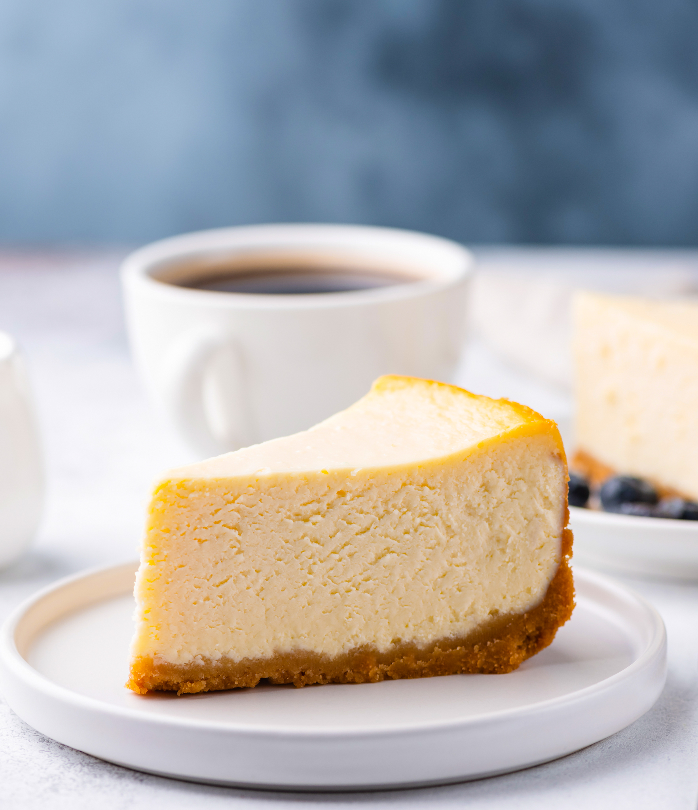

Cheesecake (New York Style)
Description

My personal favorite food, one that takes plenty of care
in getting just right, while also being beginner friendly.
New York Style cheesecake is characteristically dense in nature
with no cracking from cooling.
Ingredients
- Melted butter
- Graham Cracker Crumbs
- Sour Cream
- Flour
- Vanilla extract
- Cream cheese
- White sugar
- Milk
- Eggs
- Lemon Zest
- Orange Zest
Steps
- Make the crust and press it into a prepared springform pan.
- Make the filling and pour it over the crust.
- Bake until the edges are puffed and the center is slightly jiggly.
- Let the cheesecake cool in the oven.
- Enjoy!